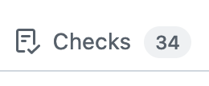
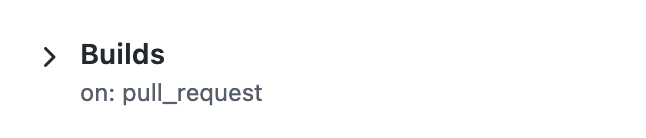
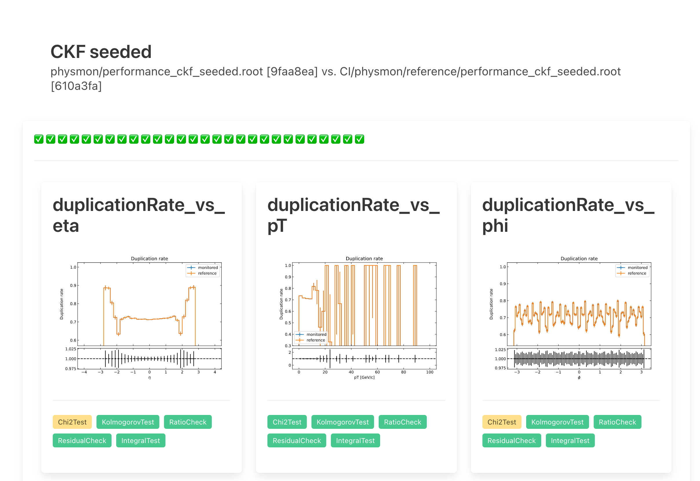

|
ACTS
Experiment-independent tracking
|
|
ACTS
Experiment-independent tracking
|
Monitoring physics performance in the ACTS CI.
The ACTS CI runs a suite of physics performance monitoring jobs dubbed physmon. The purpose is to monitor and detect changes in the physics performance, both intentional and accidental.
The associated job will run a number of workflow combinations. Currently, this includes the truth tracking and OpenDataDetector full chain workflows. The latter is further split into configurations with full seeding, truth smeared or truth estimated seeds. These jobs produce performance output files.
These performance output files are then evaluated using the programs dubbed [](analysis_apps). After this step, the job will then run comparisons of the diagnostics histograms created by these programs. If the comparisons indicate that the histogram contents changed meaningfully, the job will fail and report this on a pull request.
The physmon CI job attaches its results as an artifact to the CI run (also for successful runs) From your pull request, you need to click on the Checks tab at the top:

From there, click on the Builds workflow on the left:

On the workflow overview, scroll down to find the attached artifacts, and locate the physmon artifact. You can click to download it:
After the download, you need to unzip the archive, whose contents will look similar to this:
The .root files are the performance output files and corresponding histogram files. The physmon job log file is also available. Finally, the _plots folder contain plots of all the histogram comparisons, and the .html files contain single-file reports showing the detailed results. An example of an HTML report looks like this:

If you get a physmon job failure on your pull request, please investigate the failing report(s), and try to understand if the change causing the discrepancies is expected.
The reference histograms are not committed to the repository. They are stored as content-addressed blobs in an OCI registry, and the repository records only their hashes in CI/physmon/reference.sha256:
Committing the histograms themselves was costing the repository several MB of permanent history per update, since ROOT files do not compress or delta against each other. A reference update is now a one-line change per file, and reviewers can see exactly which references a pull request touches instead of a list of changed binaries.
CI/physmon/phys_perf_mon.sh populates CI/physmon/reference/ from the manifest before running any comparison, so local runs need no extra step. Downloaded blobs are cached under ~/.cache/acts/physmon-references (override with ACTS_PHYSMON_CACHE), so switching between branches with different references does not re-download everything.
To manage the directory by hand:
Set ACTS_PHYSMON_NO_FETCH=1 to stop phys_perf_mon.sh from touching the reference directory, if you want to point it at files of your own. The manifest is in sha256sum format, so sha256sum -c ../reference.sha256 works from inside the reference directory too.
Reference updates are published by a maintainer; you do not need registry credentials to propose one.
The manifest is also attached to every physmon run as reference-candidate.sha256 inside the physmon artifact, so you can see in advance exactly which entries an update would change.
The same resolution is available locally, for a maintainer with write access to the registry:
Only the comparisons that actually failed are updated. ROOT files embed a creation timestamp, so every physmon run produces a different hash for every file even when the physics is identical; the changed set therefore comes from the histcmp results rather than from comparing hashes. This is what keeps an update to one workflow from rewriting all forty entries.